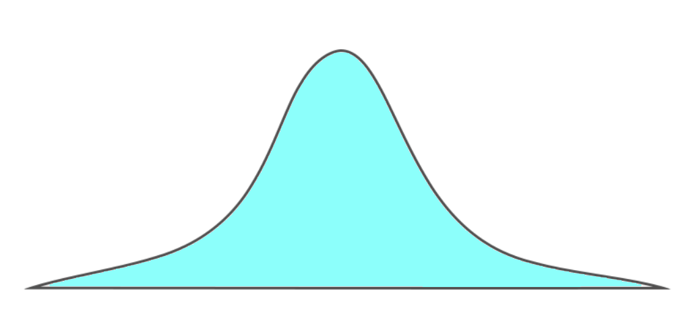

basically the same as the CIs you've done before
just check the 10% & large counts condition for both populations and that
they're independently randomly sampled
also now \(\sigma=\sqrt{\frac{\hat{p_1}(1-\hat{p_1})}{n_1}-\frac{\hat{p_2}(1-\hat{p_2})}{n_2}}\)
interpretation: same as normal
interpretation DLC: the interval suggests that the true proportion of [\(p_1\) ctx]
is between [a% lower/higher] & [b% lower/higher] than of [\(p_2\) ctx]
so if [a, b]'s our CI
remember to define \(p_1-p_2\) w/ context & make sure to specify which is which
basically the same as how the hypothesis test worked last time, again, just be sure to specify the direction and say \(p_1-p_2\) and \(\hat{p_1}-\hat{p_2}\)
name is two-prop z-test for \(p_1-p_2\)
again, basically the same, just don't do the 10% check if it's rng assignment for some reason and use \(\hat{p_c}\) when doing large counts
ditto except now it's \(\sigma_{\hat{p_c}}=\sqrt{\frac{\hat{p_c}(1-\hat{p_c})}{n_1}-\frac{\hat{p_c}(1-\hat{p_c})}{n_2}}\)
conclude: (if you still don't know what to do at this point you're hopeless)
finally. fuck off. fuck this. fuck you. fuck liu. my head feels like it's clogged with mucus and both my nostrils are nonexistent.
type i: you rejected when you shouldn't have
\(P(\text{type i})=\alpha\)
interpretation: "[\(H_0\) ctx] true, but we've convincing evidence for [\(H_a\) ctx]"
type ii: you didn't reject when you should've
interpretation: "[\(H_a\) ctx] true, but we've'nt convincing evidence for [\(H_a\) ctx]"
unfortunately it's not
the power of a test is the chance that you reject \(H_0\) when you should, i.e. when \(H_a\) is true
interpretation: "if \(H_a\) is true [plus some \(H_a\) context] there's a [power] chance that we find convicing evidence to reject [\(H_0\) context]"
to increase power, you can do some things
increase \(\alpha\), increase n, or increase the distance from \(H_a\) to the base claim (effective size)
i'm willing to bet my right kidney that liu's going to include this on the test, so here's how to find it

this, is ol' reliable.
our null distribution. the default distribution.
it's what we use to base all our hypothesis tests on, and it's nice!
BUT IT'S ACTUALLY A FUCKING LIAR.
let's say it's actually wrong, and the dark blue distribution is the true distribution in the world!
the thing is, we've no fucking clue.
we only have our z-test and some idea of how far away it is
so let's define our alpha boundaries
if we got anything within those boundaries, we'd reject the null hypothesis and have the alternate distribution get back it's rightful position as the true distribution
the thing is, the chance we get that, if you can see...is pretty fucking slim
NOTE that IRL we're actually sampling from the alt distr when we think we're sampling from the null distr!!!
for us to realize it, we have to get something in that light green area
(there's a bit on the left as well but it's covered by the bastard null distr)
so given that diagram, the probability of a type ii error is the dark blue area (again, some is hidden by the null distr)
now in actual math terms, here's how you find the chance of a type ii error
and i think i said this before, but power is just 1 - P(type ii error) so yeah